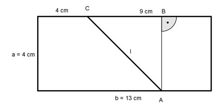

Aufgabe 96 Ein Rechteck ist 4 cm breit und 13 cm lang. Es soll so zerteilt werden, dass zwei Trapeze entstehen, deren Grundseiten 4 cm und 9 cm lang sind. Wie lang ist die Schnittlinie?  Satz von Pythagoras im Dreieck ABC: l2 = 42 + (13 – 2 * 4)2 l2 = 16 + 25 l2 = 41 |√ l = 6,4 cm